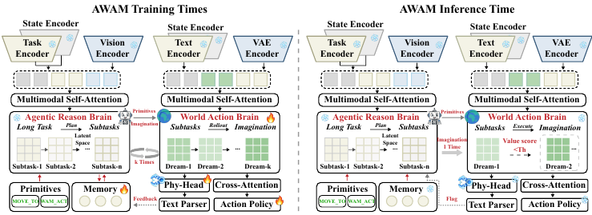
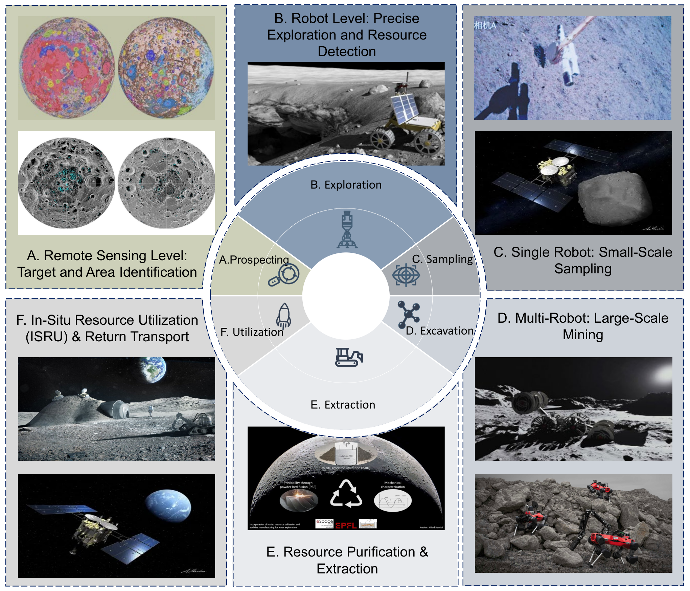
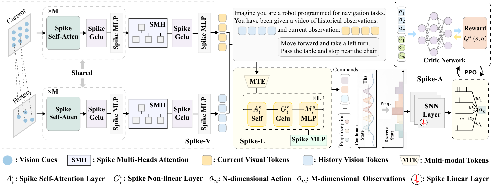

Publications
Research in robotics, world models, and embodied intelligence.
2026

Embodied Intelligence
World Models
OpenNWM: A Generalist Navigation World Model with Latent Action Pretraining
arXiv:2611.01844 · Preprint

Mining beyond Earth with Space Robots: Exploration, Sampling, and Extraction
Survey · arXiv:2608.21358
